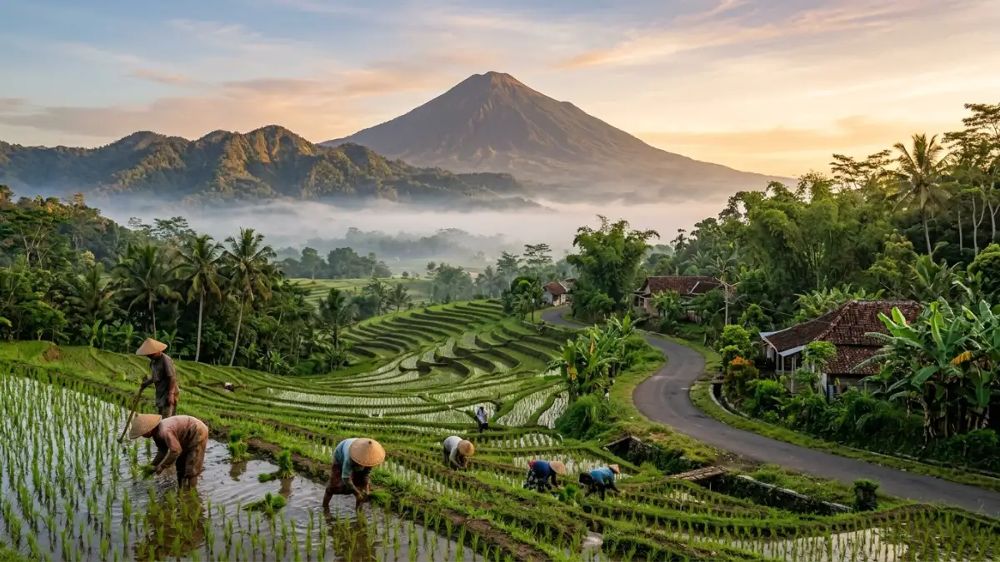
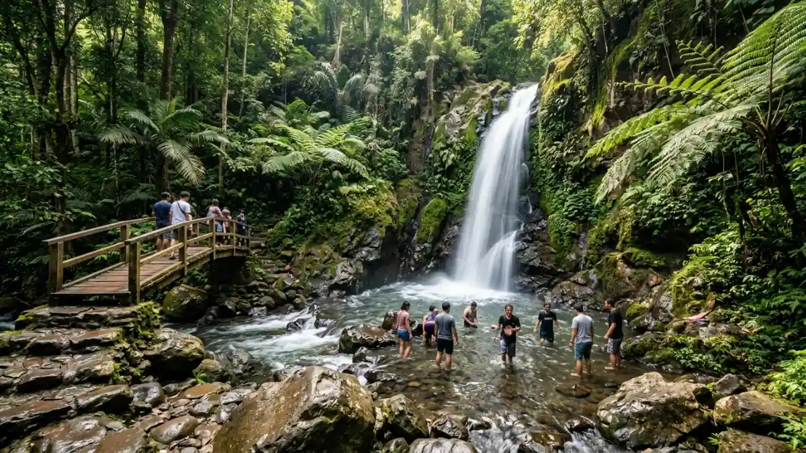

Ilustrasi Pemandangan alam pegunungan di kawasan Trawas, Mojokerto.Wisata Trawas adalah kawasan dataran tinggi di Kabupaten Mojokerto yang menawarkan udara sejuk, pemandangan Gunung Penanggungan dan Gunung Welirang, air terjun, hutan pinus, serta glamping sebagai alternatif liburan alam selain Batu Malang.
- Apa Itu Wisata Trawas dan Di Mana Lokasinya
- Apa Saja Destinasi Utama di Wisata Trawas
- Berapa Jarak dan Waktu Tempuh Menuju Trawas
- Berapa Biaya Liburan ke Trawas
- Kapan Waktu Terbaik Berkunjung ke Trawas
- Apa Bedanya Wisata Trawas dengan Batu Malang
- Apa Kesalahan Umum Wisatawan Saat Berkunjung ke Trawas
- Tips Liburan Hemat ke Trawas
- Kesimpulan
Apa Itu Wisata Trawas dan Di Mana Lokasinya
Wisata Trawas adalah kawasan wisata alam pegunungan di Kecamatan Trawas, Kabupaten Mojokerto, Jawa Timur, yang terletak di antara Gunung Arjuno dan Gunung Penanggungan.
Secara geografis, Trawas berada di sisi selatan Mojokerto yang berbukit, berbeda dari wilayah utara Mojokerto yang panas dan padat industri.
Posisi ini membuat Trawas memiliki udara sejuk sepanjang tahun, meskipun suhunya tidak sedingin kawasan Batu, Malang.
Bagi wisatawan yang datang dari Surabaya, Sidoarjo, atau Mojokerto kota, Trawas menjadi opsi healing singkat tanpa harus menempuh perjalanan jauh ke pegunungan selatan Malang.
Kawasan ini dikenal luas oleh warga Jawa Timur sebagai tempat pelarian dari hiruk-pikuk kota, dengan kombinasi wisata air, hutan pinus, dan tempat makan bernuansa pegunungan yang terus berkembang setiap tahunnya.
Apa Saja Destinasi Utama di Wisata Trawas
Destinasinya utama wisata Trawas mencakup air terjun, hutan pinus, taman bunga di atas awan, spot foto instagramable, serta glamping dan kafe dengan pemandangan gunung.
Berikut beberapa destinasi yang paling sering dikunjungi wisatawan di kawasan Trawas.
- Air Terjun Dlundung, air terjun dengan arus yang relatif tenang sehingga aman untuk anak-anak bermain air di area dangkalnya.
- Hutan pinus Alas Veenuz, cocok untuk piknik dan berfoto dengan latar pepohonan pinus yang rapat.
- Duyung Trawas Hill dan Obech Adventure Park, menawarkan spot foto ketinggian serta wahana petualangan ringan.
- Pantai di Atas Awan Aone Trawas, konsep wisata buatan yang menghadirkan suasana pantai di ketinggian dengan latar Gunung Welirang.
- Rustic Market Valley View di Desa Ketapanrame, kafe bergaya pedesaan Eropa dengan pemandangan sawah dan pegunungan.
- Wisata Sawah Sumber Gempong, menawarkan pemandangan hamparan sawah dengan latar Gunung Penanggungan.
- Petirtaan Jolotundo dan PPLH Seloliman, untuk wisatawan yang tertarik pada situs sejarah dan edukasi lingkungan.
Sebagian besar destinasi tersebut berdekatan satu sama lain sehingga wisatawan bisa mengunjungi beberapa lokasi dalam satu hari perjalanan.

Ilustrasi Air Terjun Dlundung, salah satu destinasi utama wisata Trawas yang aman untuk anak-anak.Berapa Jarak dan Waktu Tempuh Menuju Trawas
Trawas berjarak sekitar 1,5 jam berkendara dari Surabaya melalui Tol Surabaya-Pandaan, sementara dari Sidoarjo sekitar 1 jam dan dari pusat Kota Mojokerto sekitar 45 menit.
Akses menuju Trawas berupa jalan pegunungan yang menanjak dan berkelok, sehingga disarankan memastikan kendaraan dalam kondisi prima sebelum berangkat, terutama untuk rombongan yang membawa kendaraan besar.
Bagi wisatawan yang berasal dari arah Malang atau Batu, Trawas juga dapat diakses melalui jalur Pacet dan Cangar, menjadikannya opsi rute alternatif saat berlibur ke kawasan pegunungan Jawa Timur bagian barat.
Disarankan berangkat pagi hari untuk mendapatkan udara paling segar dan menghindari kabut tebal yang biasanya turun pada sore hari, khususnya saat musim hujan antara November hingga Februari.
Berapa Biaya Liburan ke Trawas
Biaya liburan ke Trawas tergolong ramah kantong, dengan tiket masuk sebagian besar objek wisata berkisar Rp5.000 hingga Rp20.000 per orang, belum termasuk biaya parkir dan konsumsi.
Sebagai gambaran, tiket masuk area utama beberapa destinasi seperti Pantai di Atas Awan Aone Trawas dipatok sekitar Rp15.000.
Sementara spot foto Sky Beach di ketinggian sekitar 1.300 meter di atas permukaan laut dikenakan tarif tambahan sekitar Rp20.000.
Objek wisata sawah dan taman bunga umumnya lebih murah, mulai dari Rp5.000 hingga Rp10.000 per orang.
Biaya total sehari berlibur di Trawas, termasuk makan dan beberapa tiket masuk, umumnya masih dapat ditekan di bawah Rp150.000 per orang jika bepergian dalam rombongan.
Untuk penginapan, tersedia pilihan glamping dan villa dengan kisaran harga yang bervariasi tergantung fasilitas dan musim liburan, sehingga sebaiknya dipesan jauh-jauh hari saat akhir pekan atau musim liburan panjang.
Kapan Waktu Terbaik Berkunjung ke Trawas
Waktu terbaik berkunjung ke Trawas adalah pada musim kemarau sekitar April hingga Oktober, dengan kunjungan pagi hari untuk mendapatkan udara paling segar dan pemandangan gunung yang lebih jelas.
Pada musim hujan, sekitar November hingga Februari, kawasan pegunungan Trawas rawan diguyur hujan deras pada sore dan malam hari, sehingga aktivitas outdoor seperti air terjun dan hutan pinus sebaiknya dilakukan pada pagi hingga siang hari.
Momentum libur panjang seperti Lebaran dan tahun baru juga menjadi waktu favorit wisatawan Jawa Timur untuk berkunjung ke Trawas karena jaraknya yang dekat dari Surabaya dibandingkan harus menempuh kemacetan menuju Malang atau Batu.
Menurut data Dinas Kebudayaan, Pemuda, Olahraga, dan Pariwisata Kabupaten Mojokerto, kunjungan wisatawan ke kawasan Mojokerto termasuk Trawas dan Pacet tercatat meningkat sekitar 20 persen pada periode setelah Lebaran 2026, didominasi wisatawan yang mencari destinasi alam dengan biaya terjangkau.
Apa Bedanya Wisata Trawas dengan Batu Malang
Perbedaan utama wisata Trawas dengan Batu Malang terletak pada jarak tempuh, suhu udara, dan skala pengembangan wisata, di mana Trawas lebih dekat dari Surabaya dan bersuhu sedikit lebih hangat dibanding Batu.
Batu Malang telah lama menjadi destinasi wisata pegunungan utama di Jawa Timur dengan ekosistem wisata yang lebih matang, mulai dari taman rekreasi skala besar hingga hotel bintang.
Trawas menawarkan pengalaman yang lebih tenang dan alami, dengan harga tiket masuk objek wisata yang umumnya lebih murah dibandingkan destinasi serupa di Batu.
Suhu di Trawas berkisar antara 18 hingga 22 derajat Celsius, sedikit lebih hangat dibandingkan Batu yang bisa mencapai suhu lebih rendah pada malam hari.
Bagi wisatawan dari Surabaya dan sekitarnya, Trawas juga lebih efisien dari sisi waktu tempuh karena tidak perlu melewati jalur menuju Malang yang sering padat saat akhir pekan.
Pembahasan lebih lengkap mengenai perbandingan kedua destinasi ini dapat dibaca pada artikel Trawas vs Batu Malang: Mana yang Lebih Cocok untuk Liburan Sejuk.
Apa Kesalahan Umum Wisatawan Saat Berkunjung ke Trawas
Kesalahan umum wisatawan saat berkunjung ke Trawas antara lain tidak membawa jaket, datang siang hari saat kabut sudah turun, serta tidak memesan penginapan lebih awal saat musim liburan.
Beberapa kesalahan lain yang sering terjadi adalah mengandalkan pembayaran digital sepenuhnya, padahal tidak semua warung dan objek wisata di Trawas menerima pembayaran nontunai.
Wisatawan juga kerap kurang memperhitungkan kondisi jalan menanjak dan berkelok menuju Trawas, sehingga disarankan memastikan kendaraan dalam kondisi prima, khususnya rem dan ban, sebelum melakukan perjalanan.
Untuk kawasan wisata alternatif dengan karakter berbeda namun masih satu jalur, wisatawan dapat mempertimbangkan wisata Pacet yang dibahas lebih lengkap pada artikel Wisata Pacet Mojokerto: Rekomendasi Destinasi Alam dan Air Panas.
Tips Liburan Hemat ke Trawas
Tips liburan hemat ke Trawas meliputi datang pada hari kerja, membawa bekal sendiri, memilih destinasi dengan tiket masuk gabungan, dan memesan penginapan jauh hari.
- Kunjungi Trawas pada hari kerja untuk menghindari keramaian dan harga penginapan yang lebih tinggi saat akhir pekan.
- Bawa uang tunai secukupnya karena sejumlah warung dan objek wisata belum melayani pembayaran nontunai.
- Gabungkan kunjungan ke beberapa destinasi yang berdekatan dalam satu hari untuk menghemat biaya transportasi.
- Datang pagi hari agar mendapatkan udara paling segar dan menghindari kabut yang biasanya turun sore hari.
- Cek estimasi biaya dan rute perjalanan secara rinci pada artikel Tips dan Biaya Liburan ke Trawas Pacet dari Surabaya dan Malang.
Kesimpulan
Wisata Trawas menjadi pilihan tepat bagi wisatawan Jawa Timur yang mencari suasana pegunungan sejuk tanpa harus menempuh perjalanan jauh ke Batu Malang.
Dengan destinasi yang beragam, mulai dari air terjun, hutan pinus, hingga kafe rustic, serta biaya yang relatif terjangkau, Trawas cocok untuk liburan singkat bersama keluarga maupun rombongan.
Rencanakan kunjungan pada musim kemarau, datang pagi hari, dan siapkan kendaraan dalam kondisi prima agar perjalanan menuju kawasan pegunungan ini berjalan lancar.
FAQ (Pertanyaan yang Sering Diajukan)